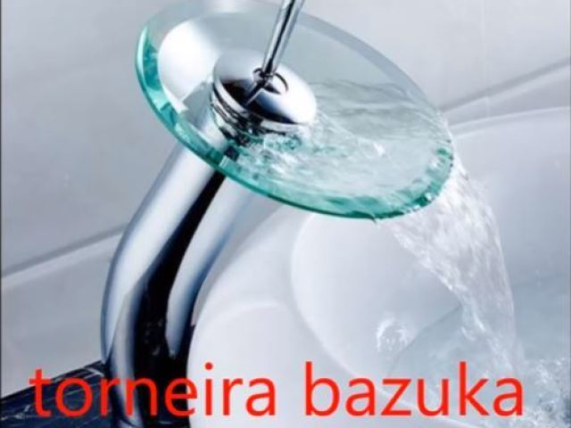
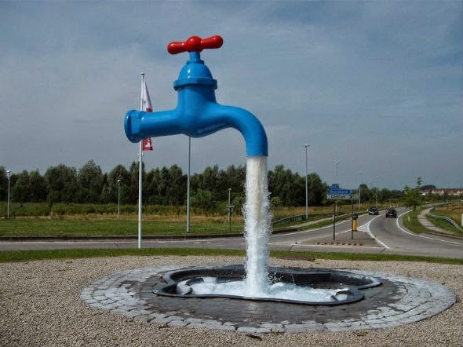

Top 5 Melhores torneiras
Top 5: Torneira Alienigena
Sua cozinha ou área gourmet com designer sofisticado que agrega em um só produto beleza e qualidade, além de ótimo custo-benefício. Peça chave que facilita tarefas do dia a dia, sofisticada e descomplicada.
Possui corpo metalizado que proporciona um toque fosco inigualável e que garante a resistência à corrosão e oxidação, aumentando sua durabilidade.
Com duas saídas, o acionamento do misturador monocomando, permite com um só toque da alavanca, controlar a temperatura e a vazão da água. A Torneira de Cozinha Gourmet conta com uma bica móvel de logo alcance, e duas opções de jato, spray e concentrado, que torna a lavagem na cozinha mais prática e fácil.
Top 4: Torneira Registro
O registro é uma peça fundamental no projeto hidráulico, pois é ele que controla a vazão do fluxo de água e também o seu bloqueio, quando necessário.
Uma torneira é a peça dotada de uma espécie de chave, ger. adaptada a um cano, tubo, recipiente etc., e que é usada para reter ou deixar sair o líquido ou gás neles contido.
Tiveram a brilhante ideia de juntar um registro com uma torneira, garantindo assim, o 4º lugar na nossa lista.
Top 3: Torneira Raiz

Para abrir o pódio do nosso top 5, não poderia faltar ela, a torneira raiz.
Com um design clássico, poucas invenções e uma única função, a torneira raiz vem para representar a "velha-guarda", tendo uma só função e executando-a com excelência e glamour.
Essa é, sem dúvidas, a melhor torneira para quem quer ter o melhor custo x benefício gastando pouco, e, por isso, garante o nosso 3º lugar na lista.
Top 2: Torneira Bazuka
Sinceramente, ficamos em dúvida de qual seria a torneira top 1 da nossa lista, porém, por motivos que iremos explicar mais a frente, nosso top 2 fica com a torneira bazuka.
Não tem muito o que dizer, é uma torneira bazuka que tem uma grande vazão de água e pouca precisão. Ótima para lugares grandes.
Bastante explosiva e ótima para apagar incendios
Top 1: Torneira Bluetooth
Em primeirissimo lugar, temos a torneira bluetooth (ficamos em dúvida entre a torneira bazuka e a torneira bluetooth).
Ela ocupa no nosso primeiro lugar pelo simples motivo de não ter canos ou fios, ela capta a água via bluetooth.
Definitivamente, é uma torneira